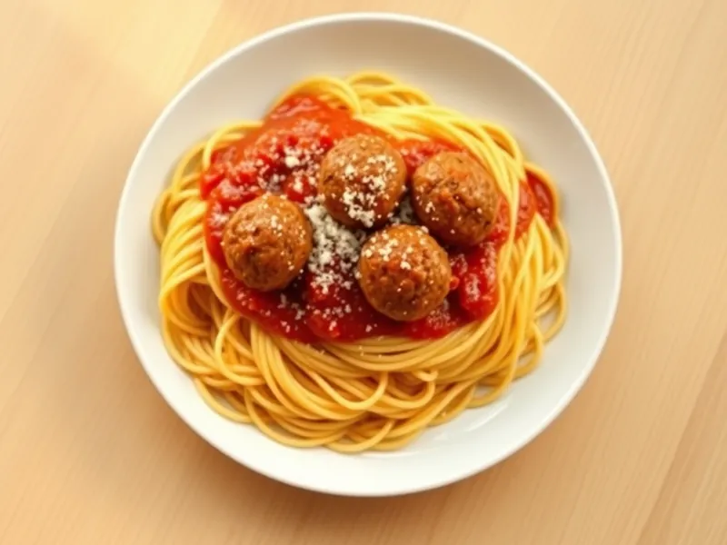

Спагетти с фрикадельками в томатном соусе
Спагетти с маленькими говяжьими фрикадельками, тушёнными в томатах
30 мин4 порц.667 ккал на порциюБ 29 · Ж 30 · У 67Американская кухня
Открыть в приложении: порции, таймеры, список покупок
Продукты на 4 порц.
- Макароны320 г
- Говяжий фарш400 г
- Лук репчатый0,5 шт
- Яйцо куриное1 шт
- Панировочные сухари3 ст. л.
- Томаты в собственном соку1 банка
- Чеснок2 зуб.
- Оливковое масло2 ст. л.
- Пармезан по желаниюпо вкусу
- Соль2,5 ч. л.
- Вода3000 мл
Как готовить
- Поставьте воду для пасты на сильный огонь. Смешайте фарш, натёртый на мелкой тёрке лук, яйцо, сухари и соль, скатайте мокрыми руками шарики размером с грецкий орех.
- Разогрейте масло на сковороде на среднем огне и обжарьте фрикадельки 5 минут, переворачивая, до румяной корочки со всех сторон.
- Добавьте нарезанный чеснок, затем томаты, размяв их. Накройте крышкой и тушите на слабом огне 12 минут, пока фрикадельки не станут плотными, а сок внутри прозрачным.
- Тем временем посолите воду и сварите спагетти по инструкции на упаковке, обычно 8-9 минут.
- Откиньте спагетти, разложите по тарелкам, сверху выложите фрикадельки с соусом и посыпьте пармезаном.
Совет. Сухари удерживают сок в фрикадельках, их можно заменить мякишем белого хлеба, размоченным в молоке.